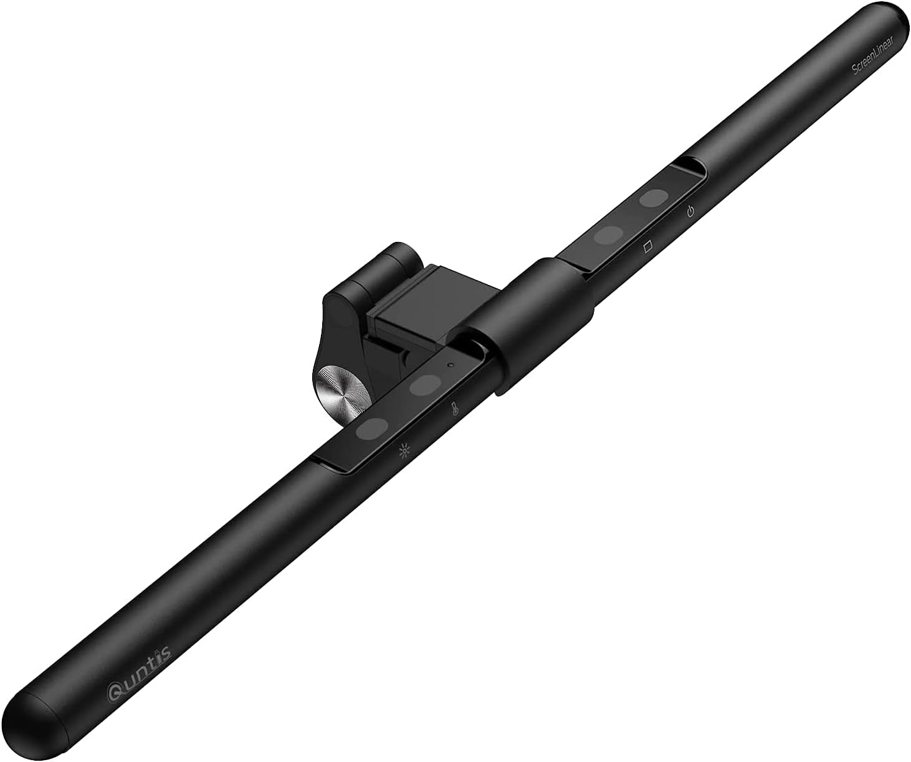

Quntis BasicPlus モニターライト｜デスクの上から「余計な光」を全部消した話
デスクライトを捨てた日から、目の奥の重さが消えた。

Quntis BasicPlus モニターライト 52cm（B08T6H2W93）
Amazonで確認
「目が疲れる原因」、ずっと照明だと思ってなかった
夜、仕事を終えて気づく。目の奥がじんと重い。肩が凝っている。でも画面の設定は変えていないし、ブルーライトカットのメガネもかけている。じゃあなんで。
答えは斜め上にあった。デスクライト。天井の蛍光灯。つまり「周囲の光」が、モニターに映り込んでいた。脳が気づかない程度の白い反射が、目に余計なノイズを与え続けていたのだ。
Quntis BasicPlusを試したのは、友人のデスクで見かけたのがきっかけだ。モニターの上にスッとバーが乗っている。デスクには何もない。でも作業スペースは十分に明るい。「あれ、何それ」と声が出た。
Quntis BasicPlus とは
2018年創業のQuntisが手がけるモニター掛け式バーライトのスタンダードモデル。「45°非対称光学設計」を軸に据えたシリーズのなかで、BasicPlusは52cmという十分な横幅と自動調光機能を備えた、コスパ最重視の一台だ。
ポイントは配光の方向。手元のデスクを照らす光が、モニター方向には飛ばない設計になっている。これが「画面への映り込みゼロ」を実現している構造的な理由だ。見た目の話ではなく、光学的に反射しないように設計されている。
主要スペック
| 全長 | 52cm（20.5インチ） |
| LED数 | 100個（50+50） |
| 演色性 | Ra>95（自然光に近い発色） |
| 色温度 | 3000K〜6500K（無段階） |
| 輝度調整 | 5%〜100%（無段階） |
| 自動調光 | あり（内蔵光センサー） |
| 電源 | USB Type-C（5V-1A）/ ケーブル長1.5m |
| 対応モニター厚 | 0.7cm〜3.5cm |
| 素材 | アルミニウム合金・PC・ABS |
使って気づいた3つのこと
1. 「映り込みがない」は思った以上に効く
普通のデスクライトを使っていたとき、自分でも気づいていなかったことがある。画面がわずかに白っぽく見えていた。光が画面に当たって、コントラストが下がっていたのだ。
BasicPlusに変えた翌朝、画面を見て「あれ、ディスプレイ設定変えたっけ」と思った。変えていない。映り込みがなくなっただけで、画面の黒が締まって見えた。色のメリハリが戻った感じがした。
2. デスクが静かになる
デスクライトをどかした。それだけで、デスクの上に「空白」が生まれた。スタンドがない。台座がない。ケーブルが一本だけ、モニターのUSBポートから伸びているだけ。
デスクが整頓されると、不思議と集中力が変わる。目に入る余計な情報が減るからだと思う。ミニマルな机というのは、見た目の問題でなく、脳の負荷の問題だ。
3. 自動調光は「ずぼらな人」ほど価値がある
内蔵センサーが部屋の明るさを読んで、自動でライトの輝度を調整してくれる。昼間は控えめに、夜は明るめに。自分で操作しなくていい。
これ、最初は「まあそんなもんか」程度に思っていた。でも2週間経った今、一度も手動で明るさを触っていない。ずっと「ちょうどいい」状態で動いている。細かく調整しなくても快適な状態が保たれる、というのが地味にストレスを消している。
Ra>95という数値の話
演色性Ra＞95というのは、「太陽光のもとで見た色に近い発色ができる」という指標だ。一般的な蛍光灯はRa70前後。Ra95超えというのは、色校正をするデザイナーが使う照明の水準に近い。
実際、キーボードの上を照らしたとき、キーの文字の読みやすさが違う。白色LEDライトは「青白くて刺さる」感じがあるが、BasicPlusの光は少し柔らかい。6500Kの昼光色にしても、目に突き刺さる感じがない。これがRa95以上の演色性から来る自然さだと思う。
正直に書く、気になる点
曲面モニターには対応していない。モニター厚0.7〜3.5cmという制限もある。ウルトラワイドや最近増えている一体型ディスプレイを使っている場合は要確認だ。
リモコンは付属しない。操作はライト本体のタッチボタンとダイヤルで行う。モニターの上に手を伸ばす距離感が少し気になる人もいるかもしれない。リモコンが必要なら上位モデルのClassic Proが選択肢になる。
また、USB充電ハブやモバイルバッテリーから給電すると点滅することがある。PCのUSBポート直挿し、もしくは安定した電源アダプターを推奨する。
こんな人に向いている
- 夜のPC作業で目の疲れが気になっている人
- デスクライトのスタンドや台座がじゃまに感じている人
- デスクを片づけたいのにライトの置き場所に悩んでいる人
- テレワーク・在宅勤務で長時間モニターを見ている人
- ゲームや夜の作業で暗い部屋でも目を酷使している人
総評
モニターライトというジャンル、「なくても困らない」と思っていた。実際に使うまでは。
でも使って2週間、デスクライトに戻れる気がしない。目が楽になったのは感覚的にわかるし、デスクのすっきりさは精神的にも効いた。何より「画面の見え方が変わった」という体験は、ディスプレイ設定をいじりまくっていた自分には少し衝撃だった。
問題はデスクライトじゃなかった。光の方向だったのだ。
Quntis BasicPlus モニターライト 52cm（B08T6H2W93）
Amazonで確認